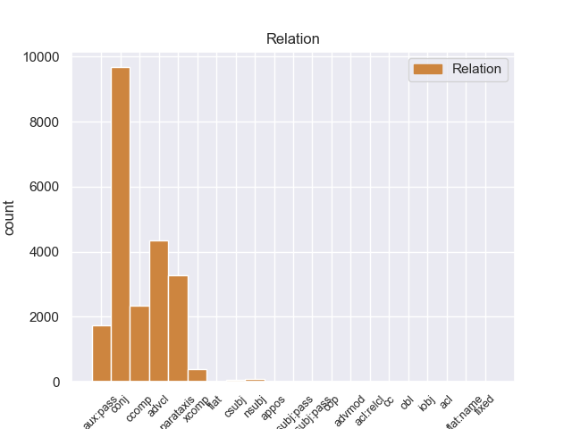
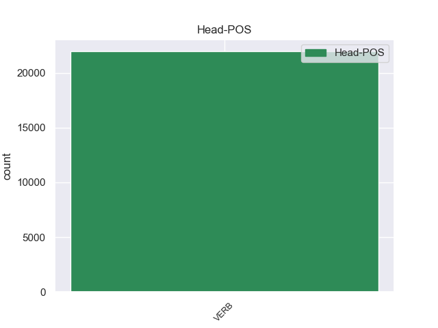
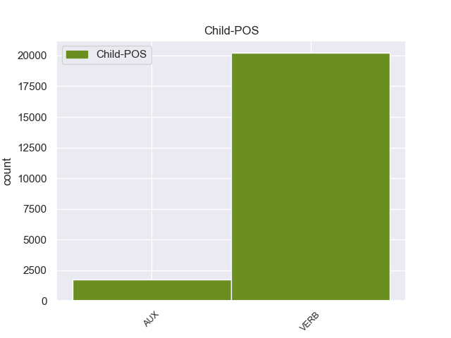

Distribution of features within this leaf



Agreement Rules sorted by frequency.
- When the dependent token is the conjunct(conj) of the head token,
1 Он _ _ _ _ 0 _ _ _
2 задумался задуматься VERB _ Aspect=Perf|Gender=Masc|Mood=Ind|Number=Sing|Tense=Past|VerbForm=Fin|Voice=Mid 0 _ _ _
3 , _ _ _ _ 0 _ _ _
4 чуть _ _ _ _ 0 _ _ _
5 перекосив _ _ _ _ 0 _ _ _
6 худенькое _ _ _ _ 0 _ _ _
7 лицо _ _ _ _ 0 _ _ _
8 , _ _ _ _ 0 _ _ _
9 и _ _ _ _ 0 _ _ _
10 даже _ _ _ _ 0 _ _ _
11 перестал _ _ _ _ 0 _ _ _
12 выдергивать _ _ _ _ 0 _ _ _
13 цветы _ _ _ _ 0 _ _ _
14 и _ _ _ _ 0 _ _ _
15 травинки _ _ _ _ 0 _ _ _
16 , _ _ _ _ 0 _ _ _
17 в _ _ _ _ 0 _ _ _
18 его _ _ _ _ 0 _ _ _
19 коричневых _ _ _ _ 0 _ _ _
20 глазах _ _ _ _ 0 _ _ _
21 появилась появиться VERB _ Aspect=Perf|Gender=Fem|Mood=Ind|Number=Sing|Tense=Past|VerbForm=Fin|Voice=Mid 2 conj 2:conj _
22 боль _ _ _ _ 0 _ _ _
23 - _ _ _ _ 0 _ _ _
24 так _ _ _ _ 0 _ _ _
25 трудно _ _ _ _ 0 _ _ _
26 вложить _ _ _ _ 0 _ _ _
27 в _ _ _ _ 0 _ _ _
28 чужую _ _ _ _ 0 _ _ _
29 душу _ _ _ _ 0 _ _ _
30 самые _ _ _ _ 0 _ _ _
31 простые _ _ _ _ 0 _ _ _
32 и _ _ _ _ 0 _ _ _
33 очевидные _ _ _ _ 0 _ _ _
34 истины _ _ _ _ 0 _ _ _
35 ! _ _ _ _ 0 _ _ _
1 Он _ _ _ _ 0 _ _ _
2 задумался задуматься VERB _ Aspect=Perf|Gender=Masc|Mood=Ind|Number=Sing|Tense=Past|VerbForm=Fin|Voice=Mid 0 _ _ _
3 , _ _ _ _ 0 _ _ _
4 чуть _ _ _ _ 0 _ _ _
5 перекосив перекосить VERB _ Aspect=Perf|Tense=Past|VerbForm=Conv|Voice=Act 2 advcl 2:advcl _
6 худенькое _ _ _ _ 0 _ _ _
7 лицо _ _ _ _ 0 _ _ _
8 , _ _ _ _ 0 _ _ _
9 и _ _ _ _ 0 _ _ _
10 даже _ _ _ _ 0 _ _ _
11 перестал _ _ _ _ 0 _ _ _
12 выдергивать _ _ _ _ 0 _ _ _
13 цветы _ _ _ _ 0 _ _ _
14 и _ _ _ _ 0 _ _ _
15 травинки _ _ _ _ 0 _ _ _
16 , _ _ _ _ 0 _ _ _
17 в _ _ _ _ 0 _ _ _
18 его _ _ _ _ 0 _ _ _
19 коричневых _ _ _ _ 0 _ _ _
20 глазах _ _ _ _ 0 _ _ _
21 появилась _ _ _ _ 0 _ _ _
22 боль _ _ _ _ 0 _ _ _
23 - _ _ _ _ 0 _ _ _
24 так _ _ _ _ 0 _ _ _
25 трудно _ _ _ _ 0 _ _ _
26 вложить _ _ _ _ 0 _ _ _
27 в _ _ _ _ 0 _ _ _
28 чужую _ _ _ _ 0 _ _ _
29 душу _ _ _ _ 0 _ _ _
30 самые _ _ _ _ 0 _ _ _
31 простые _ _ _ _ 0 _ _ _
32 и _ _ _ _ 0 _ _ _
33 очевидные _ _ _ _ 0 _ _ _
34 истины _ _ _ _ 0 _ _ _
35 ! _ _ _ _ 0 _ _ _
1 А _ _ _ _ 0 _ _ _
2 может мочь VERB _ Aspect=Imp|Mood=Ind|Number=Sing|Person=3|Tense=Pres|VerbForm=Fin|Voice=Act 11 parataxis 11:parataxis _
3 быть _ _ _ _ 0 _ _ _
4 , _ _ _ _ 0 _ _ _
5 кто-то _ _ _ _ 0 _ _ _
6 - _ _ _ _ 0 _ _ _
7 на _ _ _ _ 0 _ _ _
8 другом _ _ _ _ 0 _ _ _
9 конце _ _ _ _ 0 _ _ _
10 тоже _ _ _ _ 0 _ _ _
11 пробует пробовать VERB _ Aspect=Imp|Mood=Ind|Number=Sing|Person=3|Tense=Pres|VerbForm=Fin|Voice=Act 0 _ _ _
12 ее _ _ _ _ 0 _ _ _
13 расчистить _ _ _ _ 0 _ _ _
14 ? _ _ _ _ 0 _ _ _
1 Весь _ _ _ _ 0 _ _ _
2 лес _ _ _ _ 0 _ _ _
3 был быть AUX _ Aspect=Imp|Gender=Masc|Mood=Ind|Number=Sing|Tense=Past|VerbForm=Fin|Voice=Act 4 aux:pass 4:aux:pass _
4 населен населить VERB _ Aspect=Perf|Gender=Masc|Number=Sing|Tense=Past|Variant=Short|VerbForm=Part|Voice=Pass 0 _ _ _
5 голосами _ _ _ _ 0 _ _ _
6 прошлого _ _ _ _ 0 _ _ _
7 , _ _ _ _ 0 _ _ _
8 и _ _ _ _ 0 _ _ _
9 я _ _ _ _ 0 _ _ _
10 впервые _ _ _ _ 0 _ _ _
11 с _ _ _ _ 0 _ _ _
12 ошеломляющей _ _ _ _ 0 _ _ _
13 силой _ _ _ _ 0 _ _ _
14 ощутил _ _ _ _ 0 _ _ _
15 , _ _ _ _ 0 _ _ _
16 как _ _ _ _ 0 _ _ _
17 много _ _ _ _ 0 _ _ _
18 пробыл _ _ _ _ 0 _ _ _
19 на _ _ _ _ 0 _ _ _
20 этом _ _ _ _ 0 _ _ _
21 свете _ _ _ _ 0 _ _ _
22 и _ _ _ _ 0 _ _ _
23 что _ _ _ _ 0 _ _ _
24 прожитое _ _ _ _ 0 _ _ _
25 - _ _ _ _ 0 _ _ _
26 это _ _ _ _ 0 _ _ _
27 не _ _ _ _ 0 _ _ _
28 разбег _ _ _ _ 0 _ _ _
29 для _ _ _ _ 0 _ _ _
30 взлета _ _ _ _ 0 _ _ _
31 в _ _ _ _ 0 _ _ _
32 какую-то _ _ _ _ 0 _ _ _
33 будущую _ _ _ _ 0 _ _ _
34 , _ _ _ _ 0 _ _ _
35 настоящую _ _ _ _ 0 _ _ _
36 жизнь _ _ _ _ 0 _ _ _
37 , _ _ _ _ 0 _ _ _
38 что _ _ _ _ 0 _ _ _
39 это _ _ _ _ 0 _ _ _
40 уже _ _ _ _ 0 _ _ _
41 жизнь _ _ _ _ 0 _ _ _
42 , _ _ _ _ 0 _ _ _
43 в _ _ _ _ 0 _ _ _
44 которой _ _ _ _ 0 _ _ _
45 все _ _ _ _ 0 _ _ _
46 связано _ _ _ _ 0 _ _ _
47 : _ _ _ _ 0 _ _ _
48 далекое _ _ _ _ 0 _ _ _
49 прошлое _ _ _ _ 0 _ _ _
49.1 _ _ _ _ _ 0 _ _ _
50 с _ _ _ _ 0 _ _ _
51 настоящим _ _ _ _ 0 _ _ _
52 , _ _ _ _ 0 _ _ _
53 а _ _ _ _ 0 _ _ _
54 если _ _ _ _ 0 _ _ _
55 мне _ _ _ _ 0 _ _ _
56 суждено _ _ _ _ 0 _ _ _
57 будущее _ _ _ _ 0 _ _ _
58 , _ _ _ _ 0 _ _ _
59 то _ _ _ _ 0 _ _ _
60 и _ _ _ _ 0 _ _ _
61 оно _ _ _ _ 0 _ _ _
62 окажется _ _ _ _ 0 _ _ _
63 нерасторжимо _ _ _ _ 0 _ _ _
64 связанным _ _ _ _ 0 _ _ _
65 с _ _ _ _ 0 _ _ _
66 пережитым _ _ _ _ 0 _ _ _
67 ; _ _ _ _ 0 _ _ _
1 Радостно _ _ _ _ 0 _ _ _
2 - _ _ _ _ 0 _ _ _
3 тревожное _ _ _ _ 0 _ _ _
4 чувство _ _ _ _ 0 _ _ _
5 владело _ _ _ _ 0 _ _ _
6 мною _ _ _ _ 0 _ _ _
7 : _ _ _ _ 0 _ _ _
8 я _ _ _ _ 0 _ _ _
9 знал знать VERB _ Aspect=Imp|Gender=Masc|Mood=Ind|Number=Sing|Tense=Past|VerbForm=Fin|Voice=Act 0 _ _ _
10 , _ _ _ _ 0 _ _ _
11 что _ _ _ _ 0 _ _ _
12 ушел уйти VERB _ Aspect=Perf|Gender=Masc|Mood=Ind|Number=Sing|Tense=Past|VerbForm=Fin|Voice=Act 9 ccomp 9:ccomp _
13 не _ _ _ _ 0 _ _ _
14 так _ _ _ _ 0 _ _ _
15 уж _ _ _ _ 0 _ _ _
16 далеко _ _ _ _ 0 _ _ _
17 и _ _ _ _ 0 _ _ _
18 все _ _ _ _ 0 _ _ _
19 же _ _ _ _ 0 _ _ _
20 куда _ _ _ _ 0 _ _ _
21 сильнее _ _ _ _ 0 _ _ _
22 оторвался _ _ _ _ 0 _ _ _
23 от _ _ _ _ 0 _ _ _
24 дома _ _ _ _ 0 _ _ _
25 , _ _ _ _ 0 _ _ _
26 чем _ _ _ _ 0 _ _ _
27 если _ _ _ _ 0 _ _ _
28 бы _ _ _ _ 0 _ _ _
29 забрел _ _ _ _ 0 _ _ _
30 в _ _ _ _ 0 _ _ _
31 последнюю _ _ _ _ 0 _ _ _
32 даль _ _ _ _ 0 _ _ _
33 по _ _ _ _ 0 _ _ _
34 знакомой _ _ _ _ 0 _ _ _
35 , _ _ _ _ 0 _ _ _
36 проторенной _ _ _ _ 0 _ _ _
37 тропке _ _ _ _ 0 _ _ _
38 . _ _ _ _ 0 _ _ _
1 Весь _ _ _ _ 0 _ _ _
2 лес _ _ _ _ 0 _ _ _
3 был _ _ _ _ 0 _ _ _
4 населен _ _ _ _ 0 _ _ _
5 голосами _ _ _ _ 0 _ _ _
6 прошлого _ _ _ _ 0 _ _ _
7 , _ _ _ _ 0 _ _ _
8 и _ _ _ _ 0 _ _ _
9 я _ _ _ _ 0 _ _ _
10 впервые _ _ _ _ 0 _ _ _
11 с _ _ _ _ 0 _ _ _
12 ошеломляющей _ _ _ _ 0 _ _ _
13 силой _ _ _ _ 0 _ _ _
14 ощутил _ _ _ _ 0 _ _ _
15 , _ _ _ _ 0 _ _ _
16 как _ _ _ _ 0 _ _ _
17 много _ _ _ _ 0 _ _ _
18 пробыл _ _ _ _ 0 _ _ _
19 на _ _ _ _ 0 _ _ _
20 этом _ _ _ _ 0 _ _ _
21 свете _ _ _ _ 0 _ _ _
22 и _ _ _ _ 0 _ _ _
23 что _ _ _ _ 0 _ _ _
24 прожитое _ _ _ _ 0 _ _ _
25 - _ _ _ _ 0 _ _ _
26 это _ _ _ _ 0 _ _ _
27 не _ _ _ _ 0 _ _ _
28 разбег _ _ _ _ 0 _ _ _
29 для _ _ _ _ 0 _ _ _
30 взлета _ _ _ _ 0 _ _ _
31 в _ _ _ _ 0 _ _ _
32 какую-то _ _ _ _ 0 _ _ _
33 будущую _ _ _ _ 0 _ _ _
34 , _ _ _ _ 0 _ _ _
35 настоящую _ _ _ _ 0 _ _ _
36 жизнь _ _ _ _ 0 _ _ _
37 , _ _ _ _ 0 _ _ _
38 что _ _ _ _ 0 _ _ _
39 это _ _ _ _ 0 _ _ _
40 уже _ _ _ _ 0 _ _ _
41 жизнь _ _ _ _ 0 _ _ _
42 , _ _ _ _ 0 _ _ _
43 в _ _ _ _ 0 _ _ _
44 которой _ _ _ _ 0 _ _ _
45 все _ _ _ _ 0 _ _ _
46 связано _ _ _ _ 0 _ _ _
47 : _ _ _ _ 0 _ _ _
48 далекое _ _ _ _ 0 _ _ _
49 прошлое _ _ _ _ 0 _ _ _
49.1 _ _ _ _ _ 0 _ _ _
50 с _ _ _ _ 0 _ _ _
51 настоящим _ _ _ _ 0 _ _ _
52 , _ _ _ _ 0 _ _ _
53 а _ _ _ _ 0 _ _ _
54 если _ _ _ _ 0 _ _ _
55 мне _ _ _ _ 0 _ _ _
56 суждено _ _ _ _ 0 _ _ _
57 будущее _ _ _ _ 0 _ _ _
58 , _ _ _ _ 0 _ _ _
59 то _ _ _ _ 0 _ _ _
60 и _ _ _ _ 0 _ _ _
61 оно _ _ _ _ 0 _ _ _
62 окажется _ _ _ _ 0 _ _ _
63 нерасторжимо _ _ _ _ 0 _ _ _
64 связанным связать VERB _ Aspect=Perf|Case=Ins|Gender=Neut|Number=Sing|Tense=Past|VerbForm=Part|Voice=Pass 0 _ _ _
65 с _ _ _ _ 0 _ _ _
66 пережитым пережить VERB _ Aspect=Perf|Case=Ins|Gender=Neut|Number=Sing|Tense=Past|VerbForm=Part|Voice=Pass 64 xcomp 64:xcomp SpaceAfter=No
67 ; _ _ _ _ 0 _ _ _
1 Казалось казаться VERB _ Aspect=Imp|Gender=Neut|Mood=Ind|Number=Sing|Tense=Past|VerbForm=Fin|Voice=Mid 0 _ _ _
2 , _ _ _ _ 0 _ _ _
3 каждый _ _ _ _ 0 _ _ _
4 из _ _ _ _ 0 _ _ _
5 них _ _ _ _ 0 _ _ _
6 заключен заключить VERB _ Aspect=Perf|Gender=Masc|Number=Sing|Tense=Past|Variant=Short|VerbForm=Part|Voice=Pass 1 nsubj 1:nsubj _
7 в _ _ _ _ 0 _ _ _
8 прозрачную _ _ _ _ 0 _ _ _
9 до _ _ _ _ 0 _ _ _
10 незримости _ _ _ _ 0 _ _ _
11 оболочку _ _ _ _ 0 _ _ _
12 , _ _ _ _ 0 _ _ _
13 проницаемую _ _ _ _ 0 _ _ _
14 лишь _ _ _ _ 0 _ _ _
15 для _ _ _ _ 0 _ _ _
16 им _ _ _ _ 0 _ _ _
17 подобных _ _ _ _ 0 _ _ _
18 . _ _ _ _ 0 _ _ _
1 Около _ _ _ _ 0 _ _ _
2 витрины _ _ _ _ 0 _ _ _
3 останавливаются _ _ _ _ 0 _ _ _
4 прохожие _ _ _ _ 0 _ _ _
5 , _ _ _ _ 0 _ _ _
6 и _ _ _ _ 0 _ _ _
7 мне _ _ _ _ 0 _ _ _
8 кажется казаться VERB _ Aspect=Imp|Mood=Ind|Number=Sing|Person=3|Tense=Pres|VerbForm=Fin|Voice=Mid 0 _ _ _
9 , _ _ _ _ 0 _ _ _
10 все _ _ _ _ 0 _ _ _
11 они _ _ _ _ 0 _ _ _
12 смотрят смотреть VERB _ Aspect=Imp|Mood=Ind|Number=Plur|Person=3|Tense=Pres|VerbForm=Fin|Voice=Act 8 csubj 8:csubj _
13 на _ _ _ _ 0 _ _ _
14 Аню _ _ _ _ 0 _ _ _
15 . _ _ _ _ 0 _ _ _
1 Потом _ _ _ _ 0 _ _ _
2 органическая _ _ _ _ 0 _ _ _
3 фаза _ _ _ _ 0 _ _ _
4 отслаивается отслаиваться VERB _ Aspect=Imp|Mood=Ind|Number=Sing|Person=3|Tense=Pres|VerbForm=Fin|Voice=Mid 0 _ _ _
5 ( _ _ _ _ 0 _ _ _
6 она _ _ _ _ 0 _ _ _
7 не _ _ _ _ 0 _ _ _
8 смешивается смешиваться VERB _ Aspect=Imp|Mood=Ind|Number=Sing|Person=3|Tense=Pres|VerbForm=Fin|Voice=Mid 4 appos 4:appos _
9 с _ _ _ _ 0 _ _ _
10 водой _ _ _ _ 0 _ _ _
11 ) _ _ _ _ 0 _ _ _
12 и _ _ _ _ 0 _ _ _
13 поступает _ _ _ _ 0 _ _ _
14 в _ _ _ _ 0 _ _ _
15 реэкстрактор _ _ _ _ 0 _ _ _
16 . _ _ _ _ 0 _ _ _
1 - _ _ _ _ 0 _ _ _
2 А _ _ _ _ 0 _ _ _
3 я _ _ _ _ 0 _ _ _
4 тебя _ _ _ _ 0 _ _ _
5 снегом _ _ _ _ 0 _ _ _
6 тру тереть VERB _ Aspect=Imp|Mood=Ind|Number=Sing|Person=1|Tense=Pres|VerbForm=Fin|Voice=Act 0 _ _ _
7 - _ _ _ _ 0 _ _ _
8 тру тереть VERB _ Aspect=Imp|Mood=Ind|Number=Sing|Person=1|Tense=Pres|VerbForm=Fin|Voice=Act 6 flat 6:flat SpaceAfter=No
9 , _ _ _ _ 0 _ _ _
10 совсем _ _ _ _ 0 _ _ _
11 было _ _ _ _ 0 _ _ _
12 уши _ _ _ _ 0 _ _ _
13 отморозил _ _ _ _ 0 _ _ _
14 . _ _ _ _ 0 _ _ _
1 Последний _ _ _ _ 0 _ _ _
2 термин _ _ _ _ 0 _ _ _
3 появился _ _ _ _ 0 _ _ _
4 в _ _ _ _ 0 _ _ _
5 далеком _ _ _ _ 0 _ _ _
6 прошлом _ _ _ _ 0 _ _ _
7 , _ _ _ _ 0 _ _ _
8 когда _ _ _ _ 0 _ _ _
9 представления _ _ _ _ 0 _ _ _
10 о _ _ _ _ 0 _ _ _
11 развитии _ _ _ _ 0 _ _ _
12 отсталых _ _ _ _ 0 _ _ _
13 обществ _ _ _ _ 0 _ _ _
14 были быть AUX _ Aspect=Imp|Mood=Ind|Number=Plur|Tense=Past|VerbForm=Fin|Voice=Act 17 cop 17:cop _
15 еще _ _ _ _ 0 _ _ _
16 очень _ _ _ _ 0 _ _ _
17 упрощенными упростить VERB _ Aspect=Perf|Case=Ins|Number=Plur|Tense=Past|VerbForm=Part|Voice=Pass 0 _ _ _
18 . _ _ _ _ 0 _ _ _
1 Как _ _ _ _ 0 _ _ _
2 сообщил _ _ _ _ 0 _ _ _
3 , _ _ _ _ 0 _ _ _
4 выступая _ _ _ _ 0 _ _ _
5 по _ _ _ _ 0 _ _ _
6 республиканскому _ _ _ _ 0 _ _ _
7 телеканалу _ _ _ _ 0 _ _ _
8 , _ _ _ _ 0 _ _ _
9 министр _ _ _ _ 0 _ _ _
10 внутренних _ _ _ _ 0 _ _ _
11 дел _ _ _ _ 0 _ _ _
12 Киргизии _ _ _ _ 0 _ _ _
13 Темирбек _ _ _ _ 0 _ _ _
14 Акматалиев _ _ _ _ 0 _ _ _
15 , _ _ _ _ 0 _ _ _
16 " _ _ _ _ 0 _ _ _
17 нападавшие нападать VERB _ Aspect=Imp|Case=Nom|Number=Plur|Tense=Past|VerbForm=Part|Voice=Act 20 nsubj:pass 20:nsubj:pass _
18 были _ _ _ _ 0 _ _ _
19 хорошо _ _ _ _ 0 _ _ _
20 организованы организовывать VERB _ Aspect=Perf|Number=Plur|Tense=Past|Variant=Short|VerbForm=Part|Voice=Pass 0 _ _ _
21 , _ _ _ _ 0 _ _ _
22 а _ _ _ _ 0 _ _ _
23 акция _ _ _ _ 0 _ _ _
24 спланирована _ _ _ _ 0 _ _ _
25 заранее _ _ _ _ 0 _ _ _
26 " _ _ _ _ 0 _ _ _
27 . _ _ _ _ 0 _ _ _
1 В _ _ _ _ 0 _ _ _
2 статье _ _ _ _ 0 _ _ _
3 7 _ _ _ _ 0 _ _ _
4 Федерального _ _ _ _ 0 _ _ _
5 закона _ _ _ _ 0 _ _ _
6 " _ _ _ _ 0 _ _ _
7 О _ _ _ _ 0 _ _ _
8 государственной _ _ _ _ 0 _ _ _
9 тайне _ _ _ _ 0 _ _ _
10 " _ _ _ _ 0 _ _ _
11 прямо _ _ _ _ 0 _ _ _
12 говорится говорить VERB _ Aspect=Imp|Mood=Ind|Number=Sing|Person=3|Tense=Pres|VerbForm=Fin|Voice=Pass 0 _ _ _
13 : _ _ _ _ 0 _ _ _
14 не _ _ _ _ 0 _ _ _
15 подлежат подлежать VERB _ Aspect=Imp|Mood=Ind|Number=Plur|Person=3|Tense=Pres|VerbForm=Fin|Voice=Act 12 csubj:pass 12:csubj:pass _
16 засекречиванию _ _ _ _ 0 _ _ _
17 сведения _ _ _ _ 0 _ _ _
18 " _ _ _ _ 0 _ _ _
19 о _ _ _ _ 0 _ _ _
20 фактах _ _ _ _ 0 _ _ _
21 нарушения _ _ _ _ 0 _ _ _
22 прав _ _ _ _ 0 _ _ _
23 и _ _ _ _ 0 _ _ _
24 свобод _ _ _ _ 0 _ _ _
25 человека _ _ _ _ 0 _ _ _
26 и _ _ _ _ 0 _ _ _
27 гражданина _ _ _ _ 0 _ _ _
28 " _ _ _ _ 0 _ _ _
29 и _ _ _ _ 0 _ _ _
30 " _ _ _ _ 0 _ _ _
31 о _ _ _ _ 0 _ _ _
32 фактах _ _ _ _ 0 _ _ _
33 нарушения _ _ _ _ 0 _ _ _
34 законности _ _ _ _ 0 _ _ _
35 органами _ _ _ _ 0 _ _ _
36 государственной _ _ _ _ 0 _ _ _
37 власти _ _ _ _ 0 _ _ _
38 и _ _ _ _ 0 _ _ _
39 их _ _ _ _ 0 _ _ _
40 должностными _ _ _ _ 0 _ _ _
41 лицами _ _ _ _ 0 _ _ _
42 " _ _ _ _ 0 _ _ _
43 . _ _ _ _ 0 _ _ _
1 Перес _ _ _ _ 0 _ _ _
2 провел провести VERB _ Aspect=Perf|Gender=Masc|Mood=Ind|Number=Sing|Tense=Past|VerbForm=Fin|Voice=Act 0 _ _ _
3 в _ _ _ _ 0 _ _ _
4 воскресенье _ _ _ _ 0 _ _ _
5 45-минутную _ _ _ _ 0 _ _ _
6 встречу _ _ _ _ 0 _ _ _
7 с _ _ _ _ 0 _ _ _
8 генсеком _ _ _ _ 0 _ _ _
9 ООН _ _ _ _ 0 _ _ _
10 , _ _ _ _ 0 _ _ _
11 в _ _ _ _ 0 _ _ _
12 ходе _ _ _ _ 0 _ _ _
13 которой _ _ _ _ 0 _ _ _
14 он _ _ _ _ 0 _ _ _
15 также _ _ _ _ 0 _ _ _
16 призвал призвать VERB _ Aspect=Perf|Gender=Masc|Mood=Ind|Number=Sing|Tense=Past|VerbForm=Fin|Voice=Act 2 acl:relcl 2:acl:relcl _
17 международное _ _ _ _ 0 _ _ _
18 сообщество _ _ _ _ 0 _ _ _
19 оказать _ _ _ _ 0 _ _ _
20 давление _ _ _ _ 0 _ _ _
21 на _ _ _ _ 0 _ _ _
22 палестинское _ _ _ _ 0 _ _ _
23 руководство _ _ _ _ 0 _ _ _
24 , _ _ _ _ 0 _ _ _
25 чтобы _ _ _ _ 0 _ _ _
26 " _ _ _ _ 0 _ _ _
27 положить _ _ _ _ 0 _ _ _
28 конец _ _ _ _ 0 _ _ _
29 насилию _ _ _ _ 0 _ _ _
30 и _ _ _ _ 0 _ _ _
31 террору _ _ _ _ 0 _ _ _
32 " _ _ _ _ 0 _ _ _
33 . _ _ _ _ 0 _ _ _
1 Потому _ _ _ _ 0 _ _ _
2 что _ _ _ _ 0 _ _ _
3 она _ _ _ _ 0 _ _ _
4 уже _ _ _ _ 0 _ _ _
5 ничего _ _ _ _ 0 _ _ _
6 не _ _ _ _ 0 _ _ _
7 может мочь VERB _ Aspect=Imp|Mood=Ind|Number=Sing|Person=3|Tense=Pres|VerbForm=Fin|Voice=Act 0 _ _ _
8 делать _ _ _ _ 0 _ _ _
9 хорошо _ _ _ _ 0 _ _ _
10 , _ _ _ _ 0 _ _ _
11 и _ _ _ _ 0 _ _ _
12 потому _ _ _ _ 0 _ _ _
13 что _ _ _ _ 0 _ _ _
14 реальной _ _ _ _ 0 _ _ _
15 целью _ _ _ _ 0 _ _ _
16 всех _ _ _ _ 0 _ _ _
17 участников _ _ _ _ 0 _ _ _
18 системы _ _ _ _ 0 _ _ _
19 является являться VERB _ Aspect=Imp|Mood=Ind|Number=Sing|Person=3|Tense=Pres|VerbForm=Fin|Voice=Mid 7 cc 7:cc _
20 украсть _ _ _ _ 0 _ _ _
21 как _ _ _ _ 0 _ _ _
22 можно _ _ _ _ 0 _ _ _
23 больше _ _ _ _ 0 _ _ _
24 денег _ _ _ _ 0 _ _ _
25 . _ _ _ _ 0 _ _ _
1 Быстро _ _ _ _ 0 _ _ _
2 устаревшая _ _ _ _ 0 _ _ _
3 логика _ _ _ _ 0 _ _ _
4 виртуализации _ _ _ _ 0 _ _ _
5 делает делать VERB _ Aspect=Imp|Mood=Ind|Number=Sing|Person=3|Tense=Pres|VerbForm=Fin|Voice=Act 0 _ _ _
6 решающим решать VERB _ Aspect=Imp|Case=Dat|Number=Plur|Tense=Pres|VerbForm=Part|Voice=Act 5 iobj 5:iobj _
7 фактором _ _ _ _ 0 _ _ _
8 успешности _ _ _ _ 0 _ _ _
9 имиджеемкость _ _ _ _ 0 _ _ _
10 продукта _ _ _ _ 0 _ _ _
11 . _ _ _ _ 0 _ _ _
1 Да _ _ _ _ 0 _ _ _
2 ещё _ _ _ _ 0 _ _ _
3 , _ _ _ _ 0 _ _ _
4 если _ _ _ _ 0 _ _ _
5 к _ _ _ _ 0 _ _ _
6 этому _ _ _ _ 0 _ _ _
7 прибавить _ _ _ _ 0 _ _ _
8 третью _ _ _ _ 0 _ _ _
9 часть _ _ _ _ 0 _ _ _
10 упомянутых упомянуть VERB _ Aspect=Perf|Case=Gen|Number=Plur|Tense=Past|VerbForm=Part|Voice=Pass 13 acl 13:acl _
11 выше _ _ _ _ 0 _ _ _
12 " _ _ _ _ 0 _ _ _
13 кинутых кидать VERB _ Aspect=Perf|Case=Gen|Number=Plur|Tense=Past|VerbForm=Part|Voice=Pass 0 _ _ _
14 " _ _ _ _ 0 _ _ _
15 ( _ _ _ _ 0 _ _ _
16 а _ _ _ _ 0 _ _ _
17 это _ _ _ _ 0 _ _ _
18 5 _ _ _ _ 0 _ _ _
19 % _ _ _ _ 0 _ _ _
20 ) _ _ _ _ 0 _ _ _
21 , _ _ _ _ 0 _ _ _
22 то _ _ _ _ 0 _ _ _
23 получается _ _ _ _ 0 _ _ _
24 очень _ _ _ _ 0 _ _ _
25 даже _ _ _ _ 0 _ _ _
26 внушительная _ _ _ _ 0 _ _ _
27 цифра _ _ _ _ 0 _ _ _
28 . _ _ _ _ 0 _ _ _
1 Сижу _ _ _ _ 0 _ _ _
2 со _ _ _ _ 0 _ _ _
3 старенькой _ _ _ _ 0 _ _ _
4 бабушкой _ _ _ _ 0 _ _ _
5 - _ _ _ _ 0 _ _ _
6 Мария _ _ _ _ 0 _ _ _
7 Ивановна _ _ _ _ 0 _ _ _
8 Тюленева _ _ _ _ 0 _ _ _
9 , _ _ _ _ 0 _ _ _
10 ей _ _ _ _ 0 _ _ _
11 92 _ _ _ _ 0 _ _ _
12 годка _ _ _ _ 0 _ _ _
13 , _ _ _ _ 0 _ _ _
14 и _ _ _ _ 0 _ _ _
15 спрашиваю _ _ _ _ 0 _ _ _
16 : _ _ _ _ 0 _ _ _
17 " _ _ _ _ 0 _ _ _
18 Баба _ _ _ _ 0 _ _ _
19 Маня _ _ _ _ 0 _ _ _
20 , _ _ _ _ 0 _ _ _
21 а _ _ _ _ 0 _ _ _
22 правда _ _ _ _ 0 _ _ _
23 , _ _ _ _ 0 _ _ _
24 что _ _ _ _ 0 _ _ _
25 ночна _ _ _ _ 0 _ _ _
26 кукушка _ _ _ _ 0 _ _ _
27 всё _ _ _ _ 0 _ _ _
28 равно _ _ _ _ 0 _ _ _
29 перекукует _ _ _ _ 0 _ _ _
30 ? _ _ _ _ 0 _ _ _
31 " _ _ _ _ 0 _ _ _
32 Она _ _ _ _ 0 _ _ _
33 отвечает _ _ _ _ 0 _ _ _
34 : _ _ _ _ 0 _ _ _
35 " _ _ _ _ 0 _ _ _
36 Перекукует перекуковать VERB _ Aspect=Perf|Mood=Ind|Number=Sing|Person=3|Tense=Fut|VerbForm=Fin|Voice=Act 0 _ _ _
37 - _ _ _ _ 0 _ _ _
38 то _ _ _ _ 0 _ _ _
39 перекукует перекуковать VERB _ Aspect=Perf|Mood=Ind|Number=Sing|Person=3|Tense=Fut|VerbForm=Fin|Voice=Act 36 flat:name 36:flat SpaceAfter=No
40 , _ _ _ _ 0 _ _ _
41 дак _ _ _ _ 0 _ _ _
42 справедливо _ _ _ _ 0 _ _ _
43 куковать _ _ _ _ 0 _ _ _
44 - _ _ _ _ 0 _ _ _
45 то _ _ _ _ 0 _ _ _
46 надо _ _ _ _ 0 _ _ _
47 . _ _ _ _ 0 _ _ _
1 Родственник _ _ _ _ 0 _ _ _
2 Камалова _ _ _ _ 0 _ _ _
3 прокурор _ _ _ _ 0 _ _ _
4 города _ _ _ _ 0 _ _ _
5 Уфы _ _ _ _ 0 _ _ _
6 Зайнетдинов _ _ _ _ 0 _ _ _
7 , _ _ _ _ 0 _ _ _
8 пишет _ _ _ _ 0 _ _ _
9 в _ _ _ _ 0 _ _ _
10 " _ _ _ _ 0 _ _ _
11 Правду _ _ _ _ 0 _ _ _
12 " _ _ _ _ 0 _ _ _
13 Р. _ _ _ _ 0 _ _ _
14 Богданов _ _ _ _ 0 _ _ _
15 , _ _ _ _ 0 _ _ _
16 фабрикует _ _ _ _ 0 _ _ _
17 уголовное _ _ _ _ 0 _ _ _
18 дело _ _ _ _ 0 _ _ _
19 , _ _ _ _ 0 _ _ _
20 и _ _ _ _ 0 _ _ _
21 пошло пойти VERB _ Aspect=Perf|Gender=Neut|Mood=Ind|Number=Sing|Tense=Past|VerbForm=Fin|Voice=Act 0 _ _ _
22 - _ _ _ _ 0 _ _ _
23 поехало поехать VERB _ Aspect=Perf|Gender=Neut|Mood=Ind|Number=Sing|Tense=Past|VerbForm=Fin|Voice=Act 21 fixed 21:fixed _
24 следствие _ _ _ _ 0 _ _ _
25 , _ _ _ _ 0 _ _ _
26 принудительная _ _ _ _ 0 _ _ _
27 судебно-психиатрическая _ _ _ _ 0 _ _ _
28 экспертиза _ _ _ _ 0 _ _ _
29 , _ _ _ _ 0 _ _ _
30 лишение _ _ _ _ 0 _ _ _
31 депутатского _ _ _ _ 0 _ _ _
32 мандата _ _ _ _ 0 _ _ _
33 , _ _ _ _ 0 _ _ _
34 партийности _ _ _ _ 0 _ _ _
35 . _ _ _ _ 0 _ _ _
Disagree Examples:
1 - _ _ _ _ 0 _ _ _
2 Садитесь _ _ _ _ 0 _ _ _
3 , _ _ _ _ 0 _ _ _
4 пожалуйста _ _ _ _ 0 _ _ _
5 , _ _ _ _ 0 _ _ _
6 - _ _ _ _ 0 _ _ _
7 сказал сказать VERB _ Aspect=Perf|Gender=Masc|Mood=Ind|Number=Sing|Tense=Past|VerbForm=Fin|Voice=Act 0 _ _ _
8 он _ _ _ _ 0 _ _ _
9 , _ _ _ _ 0 _ _ _
10 не _ _ _ _ 0 _ _ _
11 поднимая поднимать VERB _ Aspect=Imp|Tense=Pres|VerbForm=Conv|Voice=Act 7 advcl 7:advcl _
12 глаз _ _ _ _ 0 _ _ _
13 . _ _ _ _ 0 _ _ _
1 - _ _ _ _ 0 _ _ _
2 Да _ _ _ _ 0 _ _ _
3 , _ _ _ _ 0 _ _ _
4 я _ _ _ _ 0 _ _ _
5 вас _ _ _ _ 0 _ _ _
6 слушаю слушать VERB _ Aspect=Imp|Mood=Ind|Number=Sing|Person=1|Tense=Pres|VerbForm=Fin|Voice=Act 0 _ _ _
7 , _ _ _ _ 0 _ _ _
8 - _ _ _ _ 0 _ _ _
9 сказал сказать VERB _ Aspect=Perf|Gender=Masc|Mood=Ind|Number=Sing|Tense=Past|VerbForm=Fin|Voice=Act 6 parataxis 6:parataxis _
10 он _ _ _ _ 0 _ _ _
11 , _ _ _ _ 0 _ _ _
12 продолжая _ _ _ _ 0 _ _ _
13 писать _ _ _ _ 0 _ _ _
14 . _ _ _ _ 0 _ _ _
1 - _ _ _ _ 0 _ _ _
2 Да _ _ _ _ 0 _ _ _
3 , _ _ _ _ 0 _ _ _
4 я _ _ _ _ 0 _ _ _
5 вас _ _ _ _ 0 _ _ _
6 слушаю _ _ _ _ 0 _ _ _
7 , _ _ _ _ 0 _ _ _
8 - _ _ _ _ 0 _ _ _
9 сказал сказать VERB _ Aspect=Perf|Gender=Masc|Mood=Ind|Number=Sing|Tense=Past|VerbForm=Fin|Voice=Act 0 _ _ _
10 он _ _ _ _ 0 _ _ _
11 , _ _ _ _ 0 _ _ _
12 продолжая продолжать VERB _ Aspect=Imp|Tense=Pres|VerbForm=Conv|Voice=Act 9 advcl 9:advcl _
13 писать _ _ _ _ 0 _ _ _
14 . _ _ _ _ 0 _ _ _
1 Она _ _ _ _ 0 _ _ _
2 взглянула взглянуть VERB _ Aspect=Perf|Gender=Fem|Mood=Ind|Number=Sing|Tense=Past|VerbForm=Fin|Voice=Act 0 _ _ _
3 на _ _ _ _ 0 _ _ _
4 него _ _ _ _ 0 _ _ _
5 , _ _ _ _ 0 _ _ _
6 как _ _ _ _ 0 _ _ _
7 будто _ _ _ _ 0 _ _ _
8 не _ _ _ _ 0 _ _ _
9 понимая понимать VERB _ Aspect=Imp|Tense=Pres|VerbForm=Conv|Voice=Act 2 advcl 2:advcl SpaceAfter=No
10 , _ _ _ _ 0 _ _ _
11 что _ _ _ _ 0 _ _ _
12 надо _ _ _ _ 0 _ _ _
13 просто _ _ _ _ 0 _ _ _
14 сесть _ _ _ _ 0 _ _ _
15 и _ _ _ _ 0 _ _ _
16 подождать _ _ _ _ 0 _ _ _
17 . _ _ _ _ 0 _ _ _
1 Да _ _ _ _ 0 _ _ _
2 , _ _ _ _ 0 _ _ _
3 я _ _ _ _ 0 _ _ _
4 вас _ _ _ _ 0 _ _ _
5 слушаю слушать VERB _ Aspect=Imp|Mood=Ind|Number=Sing|Person=1|Tense=Pres|VerbForm=Fin|Voice=Act 0 _ _ _
6 , _ _ _ _ 0 _ _ _
7 - _ _ _ _ 0 _ _ _
8 повторил повторить VERB _ Aspect=Perf|Gender=Masc|Mood=Ind|Number=Sing|Tense=Past|VerbForm=Fin|Voice=Act 5 parataxis 5:parataxis _
9 Семен _ _ _ _ 0 _ _ _
10 Еремеевич _ _ _ _ 0 _ _ _
11 , _ _ _ _ 0 _ _ _
12 несколько _ _ _ _ 0 _ _ _
13 раздражаясь _ _ _ _ 0 _ _ _
14 от _ _ _ _ 0 _ _ _
15 того _ _ _ _ 0 _ _ _
16 , _ _ _ _ 0 _ _ _
17 что _ _ _ _ 0 _ _ _
18 третья _ _ _ _ 0 _ _ _
19 причина _ _ _ _ 0 _ _ _
20 улетучилась _ _ _ _ 0 _ _ _
21 из _ _ _ _ 0 _ _ _
22 памяти _ _ _ _ 0 _ _ _
23 . _ _ _ _ 0 _ _ _